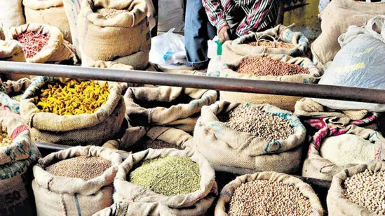
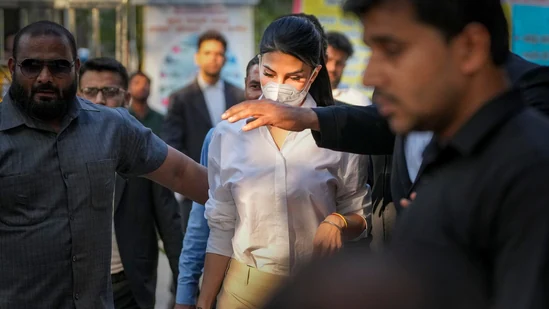

The National Statistical Office, which comes under the ministry of statistics and programme implementation released the CPI data and CFPI data for rural, urban and combined.
The two-day G20 Summit begins on Tuesday, and will be attended by US President Joe Biden and British Prime Minister Rishi Sunak among heads from 20 countries and the European Union who make up the group.
Manav Vij spoke about Laal Singh Chaddha's boycott trend and how people apologised after watching it on Netflix. He also revealed his advice of transferring ' ₹500 to Aamir Khan Productions account
Prime Minister Narendra Modi meets Chinese President Xi Jinping at G20 dinner hosted by Indonesian President Joko Widodo in Bali, Indonesia.

The Delhi Police is likely to write to the dating app Bumble to seek details of accused Aaftab Amin Poonawala's profile to find out the details of women who visited him. Aaftab had met Shraddha on this dating app.
Two residential buildings in the Ukraine capital were hit by missiles on Tuesday, the mayor of Kyiv said.
Childrens Day 2022: From potted plants to books to piggy banks, heres a list of unique gifts that you can give your child on Childrens Day
On November 11, special judge Shailendra Malik had said the order was not ready and extended the interim protection granted to Fernandez, a Sri Lankan national, till Tuesday.
Qala trailer: Tripti Dimri and Babil Khan star in this musical thriller about a successful singer from the 1940s who faces neurosis and insecurity after a rival's success.